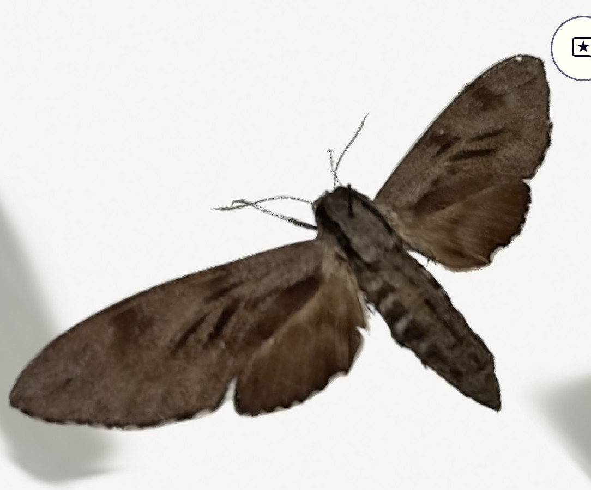
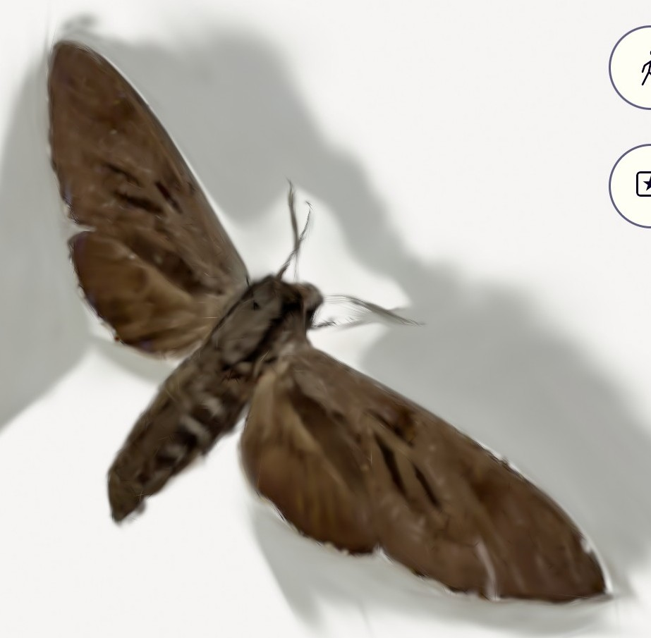
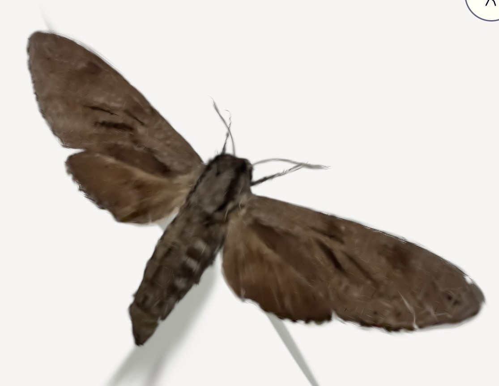
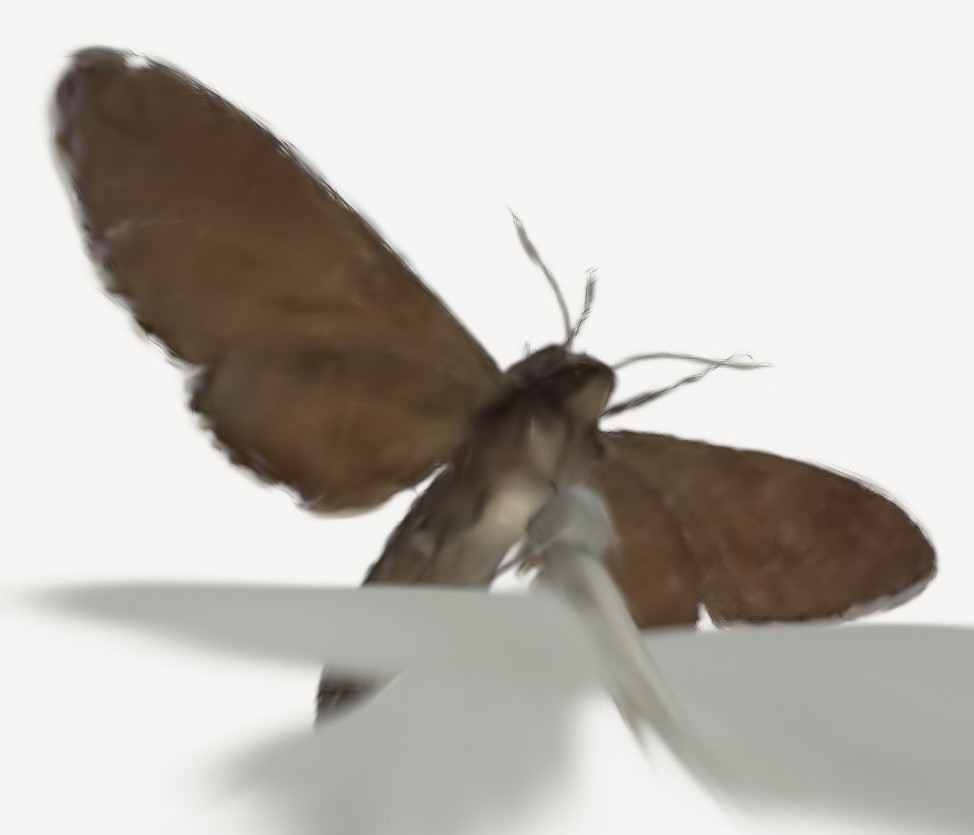
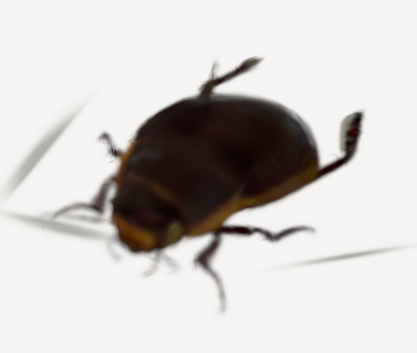

Weeknote 07/07/25
We received a Mac mini for developing the iOS app and the scAnt scanner on Wednesday this week, and since we are still waiting to 3D print the current part of the initial rig (we don’t have access to Makespace yet), we spent Monday and Tuesday this week creating more scans of insects in the collection and spent some time cataloguing moths from the drawers from last Monday. Apart from that, Bea spent time getting started with learning Swift and researching gaussian splat APIs, and Arissa looked into installing MacOS on a virtual machine to run XCode (before we got the Mac) and using React to build the app.
Gaussian splat APIs
One of the apps we used for creating scans (Kiri Engine) had its own gaussian splat API, that is unfortunately very expensive to use on a large scale (the API calls to digitise the entire collection would end up costing around $180 000).
Bea then found two other possible APIs we could use. Splatrograph API is an option with a 40MB size limit on the photos uploaded, that we currently haven’t been able to make work (see findings document for more details). The other API is an open-source gaussian splatting model that we can train ourselves: nerfstudio, which has the option of being trained on Polycam data, so we are planning to create our own dataset of insect scans to train it on. This might improve its accuracy when creating the 3D models of insects specifically. Moreover, the textured meshes exported from this project are in the same format as those from the scAnt (.obj) so we could use the scAnt scans as the validation set for our model, since they are of the highest quality. We are planning to measure various morphological characteristics and use the scAnt scans and measurements taken on ImageJ as ground truths for testing our model.
Scanning bumblebees and varying the number of photos
After looking into the gaussian splatting APIs, we started creating more scans to build our dataset (which, from the API’s website, it seems should be between 20-40 items). We varied the number of photos used for the 3D models (most of the ones we have up to this point are using ~1000 photos), between 100 to 700.
We found out that more photos doesn’t necessarily make the gaussian splat 3D models better (unlike with photogrammetry, where more photos almost always made them better and ensured there were no missing segments from the insect). Even in the cases where we only used 100 photos, since most of the photos were of the top of the moth, the patterns were captured very clearly and with a very high resolution, avoiding the general blurriness we usually see with this method. We believe this might be because the model doesn’t have multiple sides to take into account and get confused by different patterns (like confusing the top with the underside).
Below is a summary of the scans we’ve taken of a Pine Hawk-moth specimen, varying the number of photos.
| Approximate number of photos | Screenshot of GS model from above | Screenshot of GS model from below |
|---|---|---|
| 100 (more top photos than bottom) |  | |
| 150 |  | |
| 300 |  |  |
| 1000 |
Additionally, we scanned multiple different types of insects. We scanned bumblebees and a broad-bordered bee hawk-moth specimen to see how well the transparency of the wings is captured (a feature we previously identified as difficult to capture), and found gaussian splats are the only reliable model of the three methods we are currently considering (photogrammetry and LiDAR both have trouble making it transparent).
In terms of using the LiDAR, the file we export from Polycam also contains a depth map that is created using the LiDAR.
From left to right: broad-bordered bee hawk-moth gaussian splat (twice) on approximately 700 images, Cullum’s bumblebee gaussian splat, and Cullum’s bumblebee photogrammetry, both on approximately 1000 images.
| Technique | How it works | What it's good at representing | What it doesn't usually pick up | Example |
|---|---|---|---|---|
| Photogrammetry | Uses overlapping photos to create a mesh representing the 3D model | Texture (like ridges) and colours (best at picking up structural colours) | Fuzzy / furry textures, small structures like legs and antennae, thin shapes (makes wings too thick), transparency |  |
| Gaussian splatting | Uses 3D ellipsoids to model the scene | Shapes (wings and body), transparency, small structures like legs and antennae, thin wings, eyes | Detailed patterns (smooths them out), textures |  |
| LiDAR | Uses light beams pointed at the object to find a depth map and create the 3D model | Textures and colours to an extent, it's good at fuzzy textures | Shapes, especially thin shapes: misses details like antennae and legs, or fills them in too thickly |  |
In terms of the easiest insects to capture well with photogrammetry, Insect insights: case studies using 3D-printed specimen models as a tool for accessibility, education and outreach in a Natural History Museum has a range of recommendations.
“At present, we recommend that the material to be used in the production process of outreach drawers should have at least some of the following characteristics: (i) opaque cuticle (outermost part of an insect), (ii) heterogeneous colouring without metallic reflections, (iii) a more or less spherical body with relatively short and thick appendages.”
We found specimens with these characteristics were the easiest to capture with photogrammetry, but that this didn’t hold for gaussian splatting which could cope with a larger range of characteristics.
Thursday meetings
On Thursdays we usually have our weekly meetings with the insect ecology and agroecology groups, as well as a morning meeting with Ed. This week with Ed, we discussed what we’ve done so far and our plan for the following week. He also gave us some good suggestions on which traits to focus on when trying to improve our current scanning methods. At the combined lab meeting, we listened to a talk from Alexander Cumming about the topic of his master’s thesis, on the effects of regenerative agriculture on crop health and yield.
Apart from our usual meetings, this week we also had the chance to meet Josh Millar and his student Adan, who are working on a research project at Imperial, using LiDAR for room scans. We think it was useful to gain some insight into their use of LiDAR, as we currently haven’t been utilising that capability of the iPhones in our scans, even though it is still a challenge to make use of it when it comes to such small items (the moths). We also learned about some of the algorithms and sensors they have been using, but we haven’t had the chance to look into their suitability for our project yet. Adan suggested looking into the RANSAC algorithm and mm wave sensors.
Insect corner
Insect fact of the week: Some of the museum’s Death’s-head Hawk-Moths are from the bedchamber of King George III (Who was mad, they were collected by his physician)!
On Tuesday we attended the moth trapping taking place on the roof of the Zoology building in the morning, but unfortunately, due to the cold the night before, we only got to see one macromoth (Lesser Yellow Underwing) and two micro- ones (Garden Grass-veneer), so we’ve decided to try going again on another day to see more.
On Wednesday after work we joined Tiff, Ed, Matt and a group of local wildlife trust members on a walk around Clare College, guided by their head gardener, Kate Hargreaves. The gardens are beautiful and we definitely recommend checking them out if you get the chance.